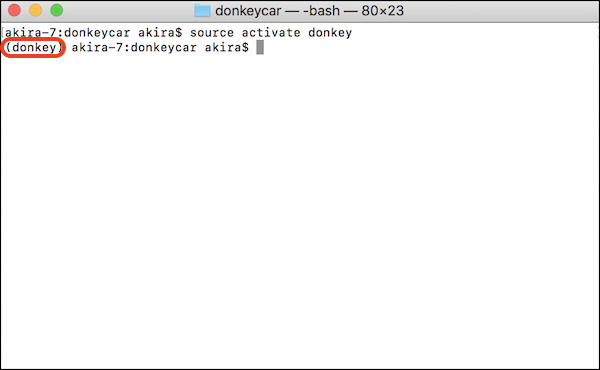
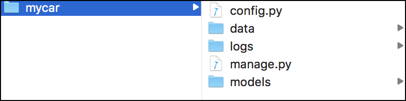

学習環境の構築(Mac)
Donkey Carの学習環境を構築します。Donkey Carの学習は、RapPi3側ではなく、PC側/クラウド側でおこないます。一般的なPCで30分-1時間程度の学習(CPUのみ)、GPU搭載のPCで10分程度、TPU搭載のクラウドで数分の学習時間が目安となります。
参考ドキュメント
PC側のインストールは、環境等に大きく依存します。インストール方法は、Donkey Car 公式ドキュメントも参考にしてください。
Git clone
1 | mkdir ~/Documents/workspace_donkey
|
Warning
本ドキュメントでは、作業フォルダ ~/Documents/workspace_donkey にしています。お使いの環境に合わせて、作業フォルダは任意のフォルダ指定で大丈夫です。
1 2 3 4 | cd ~/Documents/workspace_donkey git clone https://github.com/autorope/donkeycar/ cd donkeycar git checkout dev |
Warning
本ドキュメントは、dev branchのRev 0d6e013 で動作確認をおこなっています。
Conda環境
minicondaをインストールします。
install/envs/mac.yml のtensorflowのVersionを1.12.0に書き換えます。
| Package | Version | 記述例 |
|---|---|---|
| tensorflow | 1.12.0 | tensorflow==1.12.0 |
| numpy | 1.15.4 | numpy==1.15.4 |
| protobuf | 3.6.1 | protobuf==3.6.1 |
| keras | 2.2.4 | keras==2.2.4 |
install/envs/mac.yml
1 2 3 4 5 6 7 8 9 10 11 12 13 14 15 16 17 18 19 20 21 22 23 24 25 26 27 28 29 30 31 32 33 34 35 36 37 | name: donkey channels: - defaults dependencies: - mkl=2017.0.3=0 - numpy=1.13.1=py36_0 - openssl=1.0.2l=0 - python=3.6.2=0 - readline=6.2=2 - setuptools=27.2.0=py36_0 - sqlite=3.13.0=0 - tk=8.5.18=0 - wheel=0.29.0=py36_0 - xz=5.2.3=0 - zlib=1.2.11=0 - pip: - bleach==1.5.0 - certifi==2017.7.27.1 - chardet==3.0.4 - docopt==0.6.2 - h5py==2.7.1 - html5lib==0.9999999 - idna==2.6 - markdown==2.6.9 - olefile==0.44 - pillow==4.2.1 - pyyaml==3.12 - requests==2.18.4 - scipy==0.19.1 - six==1.10.0 - tornado==4.5.1 - urllib3==1.22 - werkzeug==0.12.2 - tensorflow==1.12.0 - numpy==1.15.4 - protobuf==3.6.1 - keras==2.2.4 |
Condaに環境を構築
1 2 | conda env create -f install/envs/mac.yml source activate donkey |
Consoleに(donkey) の文字列ができていれば成功です。

インストール
1 | pip install -e .
|
Warning
Macの場合、~/miniconda3/envs/donkey に構築される。
プロジェクトの作成
1 | donkey createcar ~/mycar
|
